<!DOCTYPE html>
<html lang="en">

<head>
  <meta charset="utf-8" />
  <meta name="viewport" content="width=device-width, initial-scale=1.0, maximum-scale=1.0, user-scalable=no" />

  <title>Polkadot Ecosystem and Economy</title>
  <link rel="icon" href="./../../assets/favicon.svg" />
  <link rel="shortcut icon" href="./../../assets/favicon.png" />
  <link rel="stylesheet" href="./../../dist/reset.css" />
  <link rel="stylesheet" href="./../../dist/reveal.css" />
  <link rel="stylesheet" href="./../.././assets/styles/PBA-theme.css" id="theme" />
  <link rel="stylesheet" href="./../../css/highlight/shades-of-purple.css" />

  <link rel="stylesheet" href="./../.././assets/styles/custom-classes.css" />

</head>

<body class="site">
  <header class="site-header">
    <!-- This logo is a link only on the watching server, not the production build -->
    <a href="">
      
    </a>
  </header>
  <main class="reveal">
    <article class="slides">
      <section  data-markdown><script type="text/template">

# Ecosystem and Economy
</script></section><section  data-markdown><script type="text/template">
## Ecosystem and Economy

This presentation will give you a high level overview of the ecosystem and economy of the Polkadot Network.

Unfortunately this presentation could never be fully exhaustive, but perhaps it will shed light on areas previously unknown.
</script></section><section  data-markdown><script type="text/template">
## The DOT Token

<div class="grid grid-cols-2">

<div>


</div>

<div class="text-left">

DOT is the native token of the Polkadot Network.

DOT tokens can be in one of the following states:

1. Transferable
2. Reserved (held)
3. Frozen (locked)

</div>

</div>
</script></section><section ><section data-markdown><script type="text/template">
## Reserved vs Frozen Balance

- DOT in both states belong to the user... but cannot be spent / transferred.
- Reserved balances stack on top of one another (no overlay).
  - Example: Staking and deposits for storing data on-chain (identities, proxies, multisig, OpenGov).
- Frozen balances can overlay with each other, and with reserved balances.
  - Example: Vested transfers and OpenGov votes.
</script></section><section data-markdown><script type="text/template">
## Reserved vs Frozen Balance

<br />

- Free: 100 DOT
- Frozen (locked): 0 DOT
- Reserved (held): 0 DOT
- Spendable: 99 DOT
- Untouchable: 1 DOT (ED)

<br />

<div>


</div>
</script></section><section data-markdown><script type="text/template">
## Reserved vs Frozen Balance (Staking)

<br />

- Free: 40 DOT
- Frozen (locked) : 0 DOT
- Reserved (held): 60 DOT
- Spendable: 39 DOT (Free - ED)
- Untouchable: 1 DOT (ED)

<br />

<div>


</div>
</script></section><section data-markdown><script type="text/template">
## Reserved vs Frozen Balance (Proxy)

<br />

- Free: 20 DOT
- Frozen (locked) : 0 DOT
- Reserved (held): 80 DOT
- Spendable: 19 DOT (Free - ED)
- Untouchable: 1 DOT (ED)

<br />

<div>


</div>
</script></section><section data-markdown><script type="text/template">
## Reserved vs Frozen Balance (Voting)

<br />

- Free: 20 DOT
- Frozen (locked): 20 DOT
- Reserved (held): 80 DOT
- Spendable: 19 DOT (Free - ED)
- Untouchable: 1 DOT (ED)

<br />

<div>

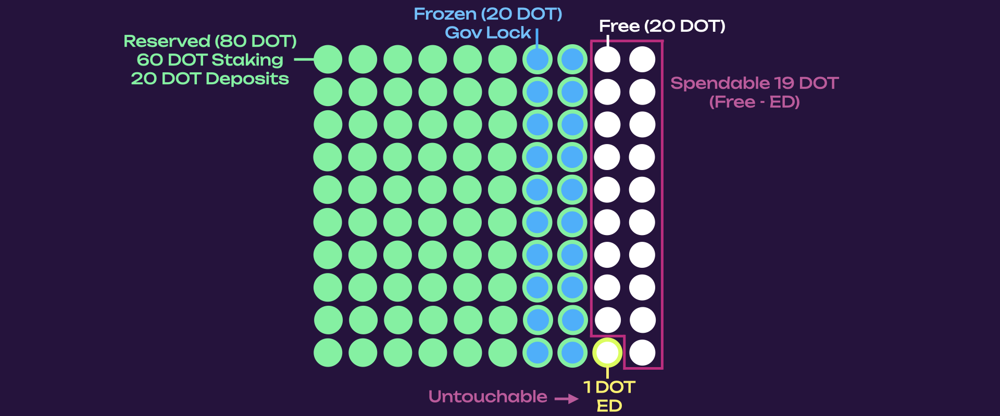

</div>
</script></section><section data-markdown><script type="text/template">
## Reserved vs Frozen Balance (More Voting)

<br />

- Free: 20 DOT
- Frozen (locked): 85 DOT
- Reserved (held): 80 DOT
- Spendable: 15 DOT (Free - untouchable)
- Untouchable: 5 DOT (frozen in excess of reserved, and ED overlays with frozen but not reserved)

<br />

<div>

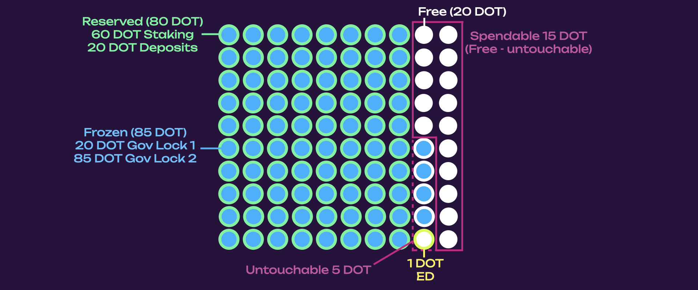

</div>
</script></section></section><section  data-markdown><script type="text/template">
## Storage Bloat

One blockchain scaling problem is storage bloat over time.

<br />

Consider the "cost" of storing data on Ethereum:

- A one time gas fee based on the amount of data stored.
- Once is it placed on the network, it lives there forever, with no additional costs.
- Over a long enough period of time, the cost of storage per time will reduce to zero.
</script></section><section  data-markdown><script type="text/template">
## Storage Deposits

To solve this problem, Polkadot additionally takes a storage deposit (in the form of Reserved Balance) for any data stored in the blockchain.

- This deposit is returned to the user when the user removes the data from the chain.

- This deposit can be quite extreme, since it is returned to the user, and can represent the impermanence or lack of "importance" of the data.
</script></section><section  data-markdown><script type="text/template">
## Dust Accounts & Existential Deposit

The most bloat-ful storage on most blockchains are user accounts:

- Both Ethereum and Bitcoin are riddled with "dust accounts" which have such a small balance, they are not worth "cleaning up".

- Polkadot solves this by having an "existential deposit" that all users must hold a minimum amount of DOT, else their account data will be cleaned up.

- Existential deposit can be thought of as a storage deposit for account data.
</script></section><section  data-markdown><script type="text/template">
## Scaling with Data Sharding

- Polkadot is already designed to scale by sharding data.
  - Polkadot only needs to store the merkle root representing large amounts of data.
- The cost to store data on shards are orders of magnitude cheaper.
  - We can have decreased storage deposits on these shards:
    - ED: 1.0 DOT on Polkadot -> .01 DOT on Asset Hub
    - Identity: 20 DOT on Polkadot -> .2 DOT on People Chain
</script></section><section ><section data-markdown><script type="text/template">
## DOT Inflation

<div class="grid grid-cols-2">

<div>

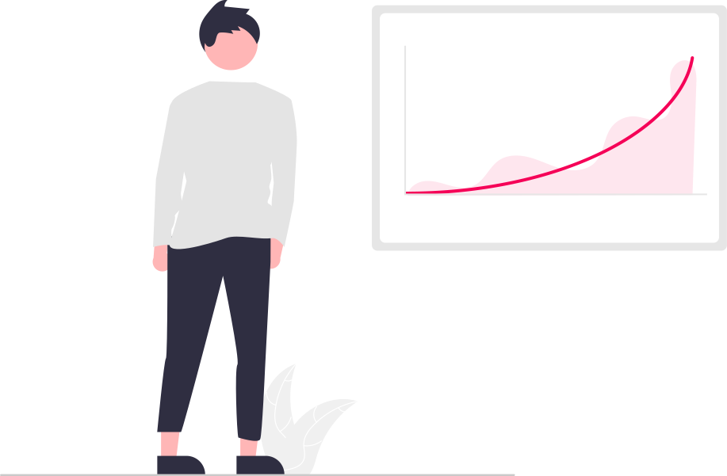

</div>

<div class="text-left">

DOT is currently configured to have a fixed inflation of 120M DOT per year.

This means that inflation rate is decreasing over time.

Newly minted tokens are distributed to the treasury and stakers in 15/85 proportion.

RFC for Flexible Inflation: https://github.com/polkadot-fellows/RFCs/pull/89

</div>

</div>
</script></section><section data-markdown><script type="text/template">
## DOT Inflation Chart

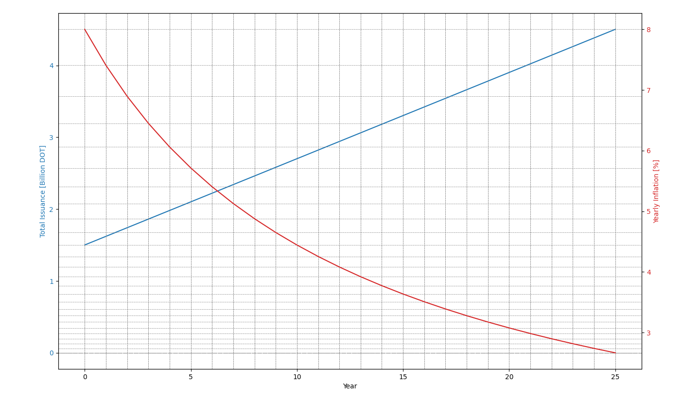
</script></section></section><section ><section data-markdown><script type="text/template">
## Blockspace

.. is an umbrella term!

Blockspace is the capacity of a blockchain to finalize and commit operations. It represents a blockchain's security, computing, and storage capabilities as an end product.

Blockspace is not measured the same on any chain; there is no standard unit for blockspace. In Bitcoin, blockspace is based on transaction size, in Ethereum, on how much computation is used (gas), and in Polkadot, on how much time is taken to execute a task on a virtual core (coretime).
</script></section><section data-markdown><script type="text/template">
## Blockspace Properties

- Flexibility: What can you do with blockspace? What can you store on the state?
- Security: How easy is to revert that state of the chain?
- Availability: How easy is to get your hands on blockspace?
</script></section></section><section  data-markdown><script type="text/template">
## DOT is a Utility Token

<div class="grid grid-cols-3">

<div>


</div>

<div class="text-left col-span-2">

The DOT token serves multiple purposes to help the Polkadot Network function:

- Purchasing Coretime
- Staking
- Voting in Governance
- Paying for fees and deposits on Relay Chain and System Chains

</div>
</div>
</script></section><section  data-markdown><script type="text/template">
## DOT Utility: Purchasing Coretime

Polkadot is a decentralized computer that provides secure and verifiable computation.

Polkadot schedules rollup data processing on a virtual multi-core CPU.

Rollup Chains can access Polkadot's computation via virtual cores by purchasing coretime **only** with the DOT token.

<br />

> If you believe that flexible, secure and available blockspace has value, then you agree that DOT also has value.
</script></section><section  data-markdown><script type="text/template">
## Evolution of the Blockspace Marketplace

<div class="grid grid-cols-2">

<div>

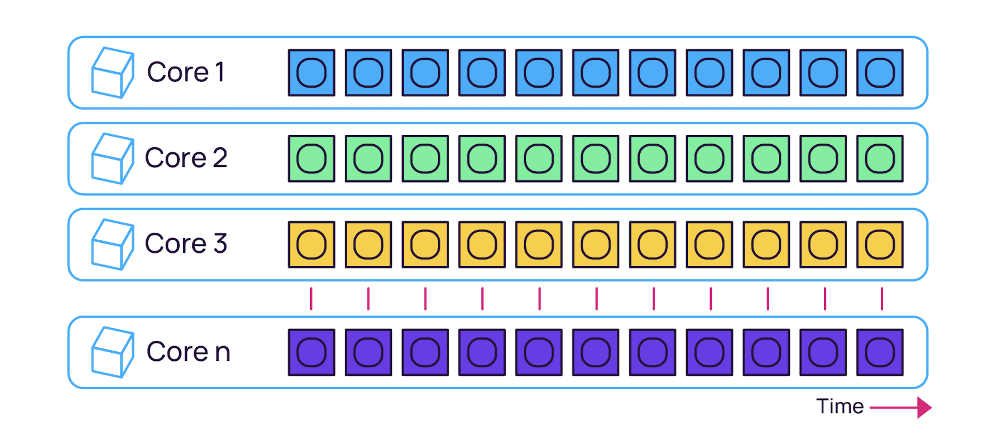

</br></br>

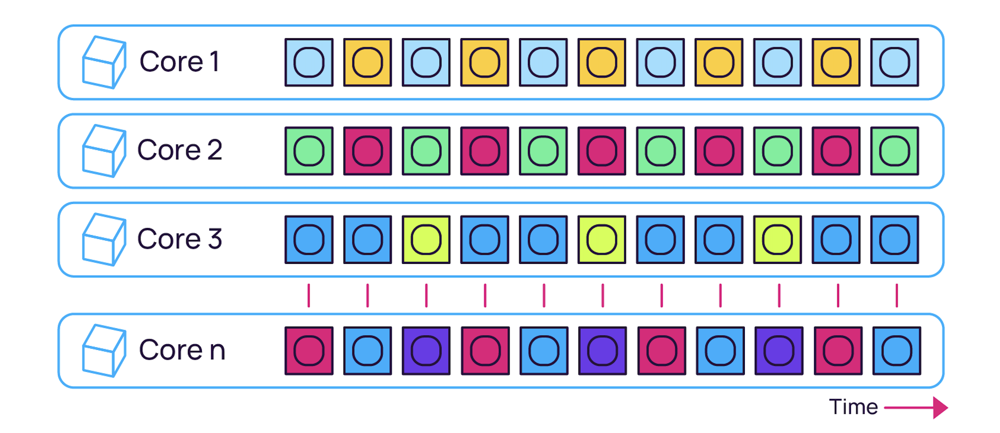

</div>

<div class="col-span-1">

<br />

- Coretime allows agile scheduling of Polkadot's computation under the assumption that cores are a resource available for anyone to use.
- Coretime can be split or interlaced allowing concurrent computation on the same core.
- A rollup can be scheduled on multiple cores leveraging parallel computation.
- Coretime sales use periodic Dutch auctions.

</div>

</div>

<aside class="notes"><ul>
<li><a href="https://forum.polkadot.network/t/initial-coretime-pricing/5187">https://forum.polkadot.network/t/initial-coretime-pricing/5187</a></li>
<li><a href="https://grillapp.net/12935/agile-coretime-pricing-explained-166522">https://grillapp.net/12935/agile-coretime-pricing-explained-166522</a></li>
<li><a href="https://www.youtube.com/watch?v=ci-h9zC-57Y">https://www.youtube.com/watch?v=ci-h9zC-57Y</a></li>
<li><a href="https://twitter.com/rphmeier/status/1797339044893917397">https://twitter.com/rphmeier/status/1797339044893917397</a></li>
</ul>
</aside></script></section><section  data-markdown><script type="text/template">
## DOT Utility: Staking

<div class="grid grid-cols-3">

<div class="col-span-2 text-left">

Given the existence of a value bearing token, it can be used to provide security to Polkadot:

- If users want to provide security to the network, they can stake their tokens.

- Stakers are rewarded for good behavior, and punished for bad behavior.

- Punishment is designed to maximize the costs for a rational actor and thereby deter misbehavior.

https://polkadot.network/features/staking/

</div>

<div>


</div>

</div>
</script></section><section  data-markdown><script type="text/template">
## Staking: Validators and Nominators

<div class="grid grid-cols-3">

<div class="col-span-2 text-left">

In the staking system, there are two roles:

- Validators: Those who run block producing / parachain validating nodes for Polkadot.
- Nominators: Users who place their tokens behind validators they think will perform their job well.

Validators (and their nominators) are rewarded based on work done for the network.

</div>

<div>


</div>

</div>
</script></section><section ><section data-markdown><script type="text/template">
## DOT Utility: Governance

<div class="grid grid-cols-3">

<div class="col-span-2 text-left">

The future of Polkadot is decided by token holders.

Polkadot has an on-chain governance system called OpenGov which is used to:

- Spend Treasury Funds
- Upgrade the Network
- Support the Polkadot Technical Fellowship
- Support Parachain Teams
- etc...

https://polkadot.network/features/opengov/

</div>

<div>


</div>

</div>
</script></section><section data-markdown><script type="text/template">
## OpenGov Structure

<div>


</div>
</script></section><section data-markdown><script type="text/template">
## OpenGov Origins and Tracks

<div class="grid grid-cols-2">

<div>


</br></br>


</div>

<div class="col-span-1">

<br />

- **Lead-in:** minimum time, capacity, decision deposit must be satisfied
- **Decision:** to pass, approval and support criteria must be satisfied
- **Confirmation:** minimum amount of time approval and support must hold
- **Enactment:** period after which changes are automatically applied

</div>

</div>

<aside class="notes"><p>talk about timeout</p>
</aside></script></section><section data-markdown><script type="text/template">
## Track Parameters

The OpenGov system has different voting tracks which have different levels of power, and proportionally different level of difficulty to pass.

Here are just some of the currently 15 tracks:

| ID  |       Origin       | Decision Deposit | Prepare Period | Decision Period | Confirm Period | Min Enactment Period |
| :-: | :----------------: | :--------------: | :------------: | :-------------: | :------------: | :------------------: |
|  0  |        Root        |    100000 DOT    |    2 Hours     |     28 Days     |     1 Day      |        1 Day         |
|  1  | Whitelisted Caller |    10000 DOT     |   30 Minutes   |     28 Days     |   10 Minutes   |      10 Minutes      |
| 10  |   Staking Admin    |     5000 DOT     |    2 Hours     |     28 Days     |    3 Hours     |      10 Minutes      |
| 11  |     Treasurer      |     1000 DOT     |    2 Hours     |     28 Days     |    3 Hours     |        1 Day         |
| 12  |    Lease Admin     |     5000 DOT     |    2 Hours     |     28 Days     |    3 Hours     |      10 Minutes      |
</script></section><section data-markdown><script type="text/template">
## Example: Root Origin

The origin with the highest level of privileges. Requires extremely high levels of approval and support for early passing. The prepare and enactment periods are also large.

<image src="../../assets/img/7-Polkadot/eco/root-curve.png" style="width: 800px;">

For instance, a referendum proposed in this track needs to amass 48.2% support (total network issuance) by the end of the first day with over 93.5% approval to be considered to be part of the confirm period.
</script></section><section data-markdown><script type="text/template">
## OpenGov Approval and Support

<div class="grid grid-cols-2">

<div>


</br></br>


</div>

<div class="col-span-1">

<br />

- **Aproval:** the share of conviction-weighted _aye_ votes against the conviction-weighted total of _aye_ and _nay_ votes.
- **Support:** the total number of _aye_ and _abstain_ votes (ignoring any adjustment for conviction) compared to the total possible votes (active issuance) that could be made in the system. In case of split votes, only _aye_ and _abstain_ will count.

</div>

</div>
</script></section><section data-markdown><script type="text/template">
## Conviction Voting

Polkadot utilizes an idea called voluntary locking / conviction voting.

This allows token holders to increase their voting power by locking up their tokens for a longer period of time.

```text
votes = tokens * conviction_multiplier
```

The conviction multiplier increases the vote multiplier by one every time the number of lock periods double.

<div class="text-small">

| Lock Periods | Vote Multiplier | Length in Days |
| ------------ | --------------- | -------------- |
| 0            | 0.1             | 0              |
| 1            | 1               | 7              |
| 2            | 2               | 14             |
| 4            | 3               | 28             |
| 8            | 4               | 56             |
| 16           | 5               | 112            |
| 32           | 6               | 224            |

</div>
</script></section><section data-markdown><script type="text/template">
## Governance: Solo Voting Mechanics

<div class="grid grid-cols-2">

<div>


</div>

<div class="col-span-1">

<br />

- DOT tokens are frozen for votes.
- You can reuse your frozen tokens across multiple proposals.
- You can use reserved balance (staking) for voting.
- You can update your vote while the proposal is ongoing.
- Conviction voting might result in longer locks.
</script></section><section data-markdown><script type="text/template">
## Governance: Delegation Mechanics

<div class="grid grid-cols-2">

<div>

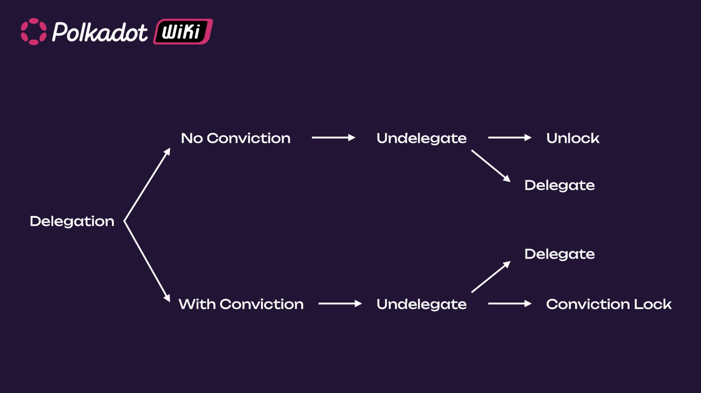

</div>

<div class="col-span-1">

<br />

- Any conviction locks are applied as soon as you undelegate, regardless of whether your delegated votes were used for voting during that time.
- Before delegating a specific track, you must remove any vote on that track.
</script></section></section><section ><section data-markdown><script type="text/template">
## Treasury

<div class="grid grid-cols-3">

<div class="text-left col-span-2">

Polkadot has an on-chain treasury which is used to support permissionless and decentralized development of the network.

- Treasury gets its funds through inflation (15% of 120M DOT), slashing, 80% of transaction fees, and direct transfers.

- Treasury will automatically burn a 1% of its funds every spending period (24 days), placing pressure on spending the tokens.

</div>

<div>


</div>

</div>
</script></section><section data-markdown><script type="text/template">
## Treasury Outlets

- Proposals: Instant payments to individuals approved by governance.
- Bounties: Multi-stage payments to individuals managed by governance and an appointed bounty curator.
- Tips: Small payments to individuals that can be made more easily through specific governance tracks.
</script></section></section><section  data-markdown><script type="text/template">
# Ecosystem
</script></section><section  data-markdown><script type="text/template">
## A Future Full of Clients

The Web3 Foundation is allocating 10 Million DOT for creating a diverse ecosystem of Polkadot clients.

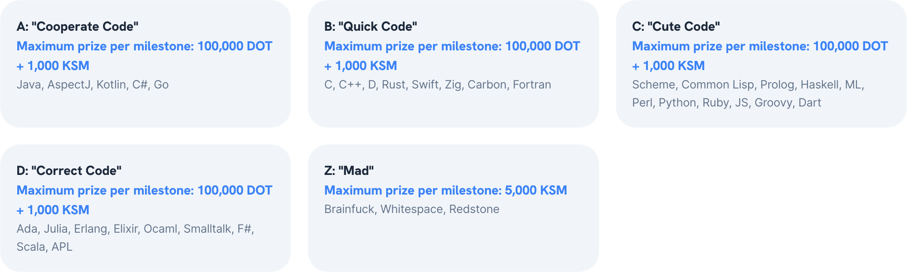

This can help provide additional resilience to the network from software bugs.
</script></section><section ><section data-markdown><script type="text/template">
## System Chains

- System Chains contain core Polkadot protocol features, on a rollup chain rather than Polkadot itself.
- Polkadot's Relay Chian becomes more and more transactionless, and all user-generated transactions happen at the "edges".
- System Chains have allocated coretime by governance. They _de-facto_ they are the "official" Polkadot rollups, and DOT is used for deposits and fees.

<aside class="notes"><ul>
<li><a href="https://wiki.polkadot.network/docs/learn-system-chains">https://wiki.polkadot.network/docs/learn-system-chains</a></li>
<li><a href="https://github.com/polkadot-fellows/RFCs/blob/34d26ff1aa343b0cc980afbf2f40c1d5b6a781ea/text/0032-minimal-relay.md">https://github.com/polkadot-fellows/RFCs/blob/34d26ff1aa343b0cc980afbf2f40c1d5b6a781ea/text/0032-minimal-relay.md</a></li>
</ul>
</aside></script></section><section data-markdown><script type="text/template">
## Current and Future System Parachains

Current:

- Asset Hub: Allows creation and registration of tokens (FT & NFTs).
- Bridge Hub: A chain for managing bridges to other networks.
- Coretime Chain: responsible for the sales of coretime.
- Collectives: Acts as a place for coordination of the Polkadot DAOs.
- People Chain: A chain for managing identity and Personhood.

Future:

- Governance: Manage all the various proposals and tracks.
- Staking: Manage all the validator and nominator logic, rewards, etc...
- Eventually everything...

<aside class="notes"><p><a href="https://wiki.polkadot.network/docs/learn-system-chains">https://wiki.polkadot.network/docs/learn-system-chains</a></p>
</aside></script></section></section><section  data-markdown><script type="text/template">
## Polkadot Rollups

<div class="grid grid-cols-2">

<div>

Anyone with a great idea, and access to DOT token, can launch a rollup on Polkadot.

Dozens of teams from around the world have already done that, and are taking advantage of the features that Polkadot provides: shared security and interoperability.

</div>

<div>

<image src="../../assets/img/7-Polkadot/eco/polkadot-parachains.svg" style="width: 500px;">

</div>

</div>

<aside class="notes"><p><a href="https://polkadot.subscan.io/parachain">https://polkadot.subscan.io/parachain</a></p>
</aside></script></section><section ><section data-markdown><script type="text/template">
## Ecosystem Verticals

While this list is not exhaustive, some of the verticals we have seen appear in Polkadot are:

<div class="grid grid-cols-5">

<div class="col-span-3">

- Smart Contract Chains: Moonbeam, Astar, Polkadot Hub
- Decentralized Finance (DeFi): Hydration
- Liquid Staking Derivatives (LSD): Bifrost
- Decentralized Social (DeSo): Frequency
- Decentralized Identity (DID): Kilt

</div>

<div class="col-span-2">

- Tokenization (RWAs): Xcavate
- Gaming: Mythical Games, Gavun Wud, Pinknomics
- NFTs (Music, Art, etc...): Hub, KodaDot
- Bridges: Snowbridge, Hyperbridge
- File Storage: Crust

</div>

</div>

<aside class="notes"><p><a href="https://substrate.io/ecosystem/projects/">https://substrate.io/ecosystem/projects/</a></p>
</aside></script></section><section data-markdown><script type="text/template">
## Hydration Network

<div class="grid grid-cols-2">

<div>

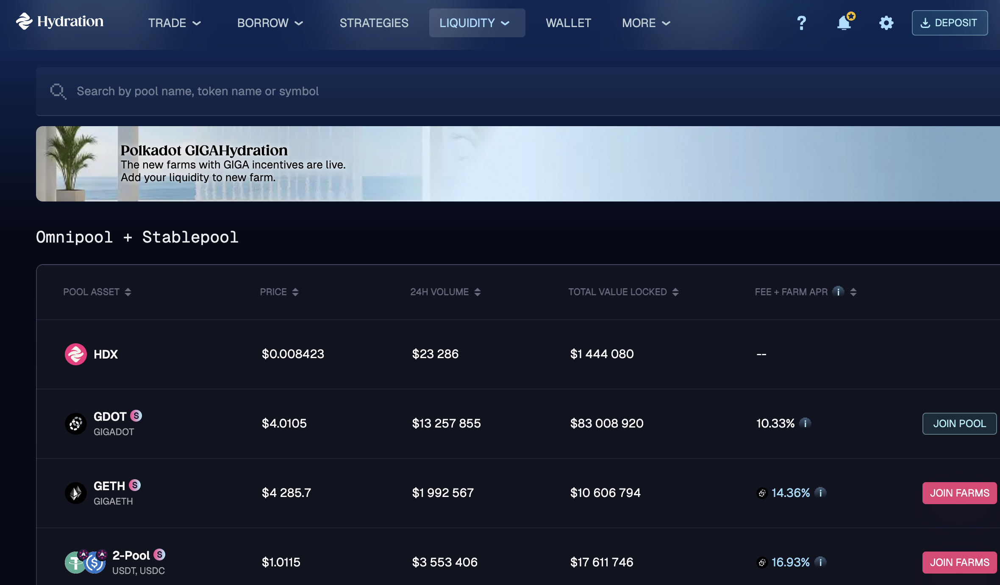

</div>

<div class="col-span-1">

<br />

- swap, trade OTC, yield DCA, trade DCA, bonds
- lending and borrowing
- strategies (gigaDOT, gigaETH)
- cross-chain, staking, referrals, memepad
</script></section><section data-markdown><script type="text/template">
## Bifrost

<div class="grid grid-cols-2">

<div>

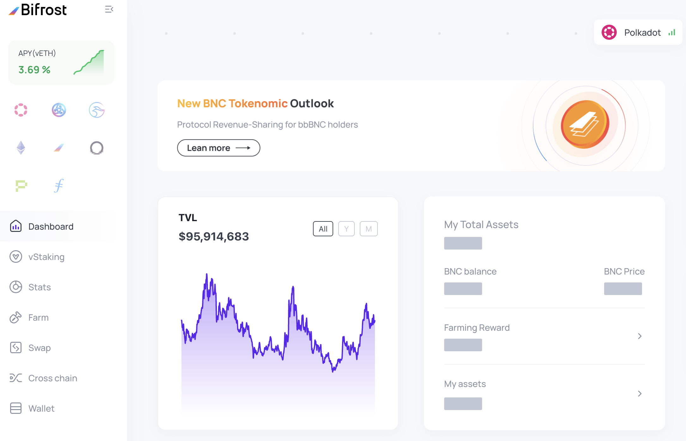

</div>

<div class="col-span-1">

<br />

- vStaking
- farm
- swap
- cross-chain
</script></section><section data-markdown><script type="text/template">
## MeWe

<div>

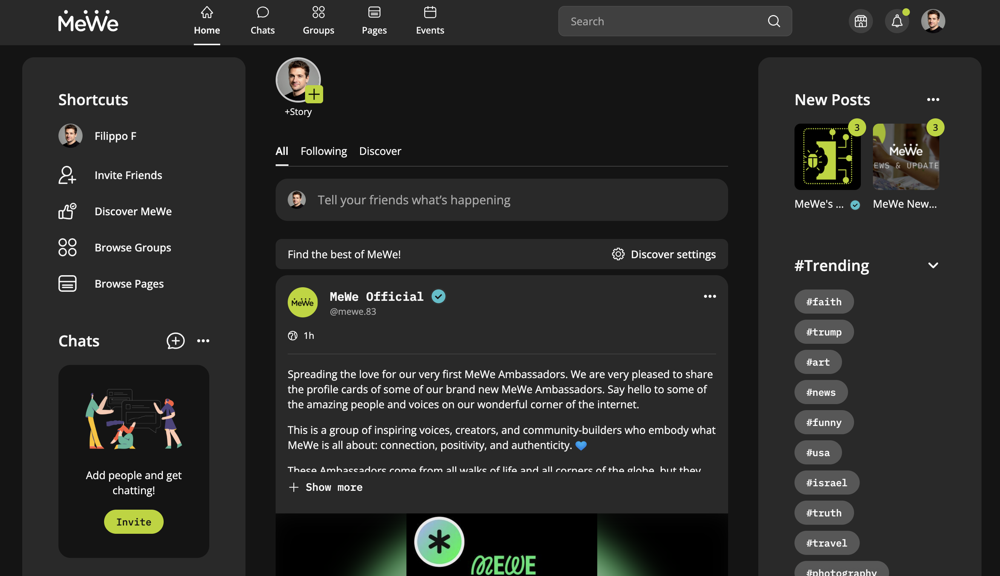

</div>
</script></section><section data-markdown><script type="text/template">
## Gaming - Mythical

<div class="grid grid-cols-2">

<div>

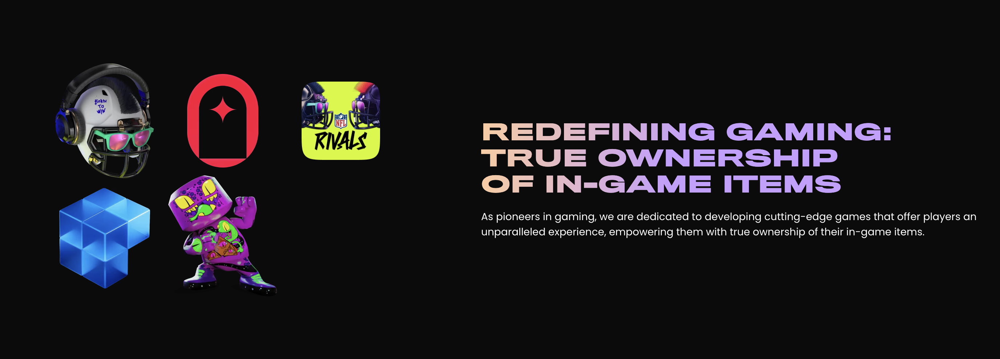

</div>

<div class="col-span-1">

<br />

- Blankos
- NFL Rivals
- FIFA Rivals
- Pudgy Party
</script></section><section data-markdown><script type="text/template">
## Gaming - FlappyWUD

<div>

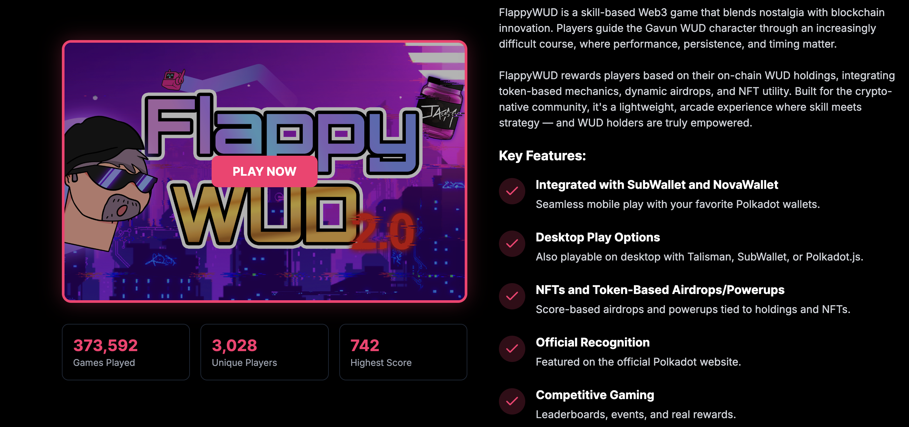

</div>
</script></section><section data-markdown><script type="text/template">
## Gaming - WUD Universe

<div class="grid grid-cols-2">

<div>


</div>

<div class="col-span-1">

<br />

- Gamified Proof-of-Personhood (PoP)
- Made with nested, interactive and dynamic NFTs
- A tool to showcase Polkadot. It's an identity people could build to show their view of Polkadot via their cabin. You wanna show Polkadot in a nutshell, just share your cabin.
</script></section></section><section  data-markdown><script type="text/template">
## Wallets

Thanks to the treasury and Polkadot community, a number of different wallets have been developed across the ecosystem.

<image src="../../assets/img/7-Polkadot/eco/wallets.png" style="width: 1200px;">

https://polkadot.network/ecosystem/wallets/
</script></section><section  data-markdown><script type="text/template">
## Generic Ledger Support

<div class="grid grid-cols-3">

<div class="col-span-2">

Polkadot has been working with Ledger to provide rich support for the Polkadot network.

Users can get clear visibility into the transactions they are signing, and perform complicated tasks such as batching, multisigs, staking, governance, and more.

</div>

<div>

<image src="../../assets/img/7-Polkadot/eco/ledger.webp" style="width: 500px;">

</div>

</div>

<aside class="notes"><ul>
<li><a href="https://forum.polkadot.network/t/polkadot-generic-ledger-app/4295">https://forum.polkadot.network/t/polkadot-generic-ledger-app/4295</a></li>
</ul>
</aside></script></section><section  data-markdown><script type="text/template">
## Block Explorers

- Polkadot-JS UI
- Subscan - Blockchain explorer for Substrate chains.
- 3xpl.com - Universal block explorer and JSON API with Polkadot support.
- Blockchair.com - Universal blockchain explorer and search engine with Polkadot support.
- Statescan.io - Polkadot & Kusama Blockchain explorer.

<aside class="notes"><p><a href="https://wiki.polkadot.network/docs/build-tools-index#block-explorers">https://wiki.polkadot.network/docs/build-tools-index#block-explorers</a></p>
</aside></script></section><section  data-markdown><script type="text/template">
## Governance Dashboards

The most popular ones at the moment:

<div class="grid grid-cols-2">

<div>

### Polkassembly

<image src="../../assets/img/7-Polkadot/eco/polkassembly.png" style="width: 600px;">

</div>

<div>

### Subsquare

<image src="../../assets/img/7-Polkadot/eco/subsquare.png" style="width: 600px;">

</div>

</div>
</script></section><section  data-markdown><script type="text/template">
## Polkadot Forum

<image src="../../assets/img/7-Polkadot/eco/forum.png" style="width: 1200px;">

<aside class="notes"><p><a href="https://forum.polkadot.network/">https://forum.polkadot.network/</a></p>
</aside></script></section><section  data-markdown><script type="text/template">
## Just a few DAOs..

<div class="grid grid-cols-5">

<div class="col-span-3">

- Polkadot Technical Fellowship (on-chain)
- Polkadot Alliance (on-chain)
- Polkadot Ambassadors (on-chain)
- PBA Alumni Voting DAO
- ChaosDAO
- Kus DAO

</div>

<div class="col-span-2">

- Hungarian Polkadot DAO
- Le Nexus
- Polkadotters
- Saxemberg
- Dotcast

</div>

</div>
</script></section><section ><section data-markdown><script type="text/template">
## Fellowship

The Polkadot Fellowship is a decentralized technical collective on the Polkadot network designed to recognize, nurture, and incentivize contributors to the core Polkadot protocol.
</script></section><section data-markdown><script type="text/template">
## Fellowship Manifesto

<image src="../../assets/img/7-Polkadot/eco/fellowship-manifesto.png" style="width: 1200px;">

<aside class="notes"><p><a href="https://github.com/polkadot-fellows">https://github.com/polkadot-fellows</a></p>
</aside></script></section><section data-markdown><script type="text/template">
## Fellowship Members

<image src="../../assets/img/7-Polkadot/eco/fellowship-members.png" style="width: 1200px;">

<aside class="notes"><p><a href="https://polkadot.js.org/apps/?rpc=wss%3A%2F%2Fkusama-rpc.polkadot.io#/fellowship">https://polkadot.js.org/apps/?rpc=wss%3A%2F%2Fkusama-rpc.polkadot.io#/fellowship</a></p>
</aside></script></section><section data-markdown><script type="text/template">
## RFCs

<image src="../../assets/img/7-Polkadot/eco/rfcs.png" style="width: 1200px;">
</script></section></section><section  data-markdown><script type="text/template">
<!-- .slide: data-background-color="#4A2439" -->

# Questions

Did I miss anything?
</script></section>
    </article>
  </main>

  <script src="./../../dist/reveal.js"></script>

  <script src="./../../plugin/markdown/markdown.js"></script>
  <script src="./../../plugin/highlight/highlight.js"></script>
  <script src="./../../plugin/zoom/zoom.js"></script>
  <script src="./../../plugin/notes/notes.js"></script>
  <script src="./../../plugin/math/math.js"></script>

  <script src="./../../assets/plugin/mermaid.js"></script>
  <script src="./../../assets/plugin/mermaid-theme.js"></script>

  <script src="./../../assets/plugin/chart/chart.js"></script>
  <script src="./../../assets/plugin/chart/chart.min.js"></script>

  <script src="./../../assets/plugin/tailwindcss.min.js"></script>

  <script>
    function extend() {
      var target = {};
      for (var i = 0; i < arguments.length; i++) {
        var source = arguments[i];
        for (var key in source) {
          if (source.hasOwnProperty(key)) {
            target[key] = source[key];
          }
        }
      }
      return target;
    }

    // default options to init reveal.js
    var defaultOptions = {
      controls: true,
      progress: true,
      history: true,
      center: true,
      transition: 'default', // none/fade/slide/convex/concave/zoom
      slideNumber: true,
      mermaid: {
        startOnLoad: false,
        logLevel: 3,
        theme: 'base',
        themeVariables: {
          primaryColor: purple,
          primaryTextColor: white,
          primaryBorderColor: pink,
          lineColor: pink,
          secondaryColor: lightPurple,
          tertiaryColor: lightPurple,
        },
      },
      chart: {
        defaults: {
          color: 'lightgray', // color of labels
          scale: {
            beginAtZero: true,
            ticks: { stepSize: 1 },
            grid: { color: "lightgray" }, // color of grid lines
          },
        },
        line: { borderColor: ["#ccc", "#E6007A", "#6D3AEE"], "borderDash": [[5, 10], [0, 0]] },
        bar: { backgroundColor: ["#ccc", "#E6007A", "#6D3AEE"] },
      },
      plugins: [
        RevealMarkdown,
        RevealHighlight,
        RevealZoom,
        RevealNotes,
        RevealMath,
        RevealMermaid,
        RevealChart
      ]
    };

    // options from URL query string
    var queryOptions = Reveal().getQueryHash() || {};

    var options = extend(defaultOptions, {"width":1400,"height":900,"margin":0,"minScale":0.2,"maxScale":2,"transition":"none","controls":true,"progress":true,"center":true,"slideNumber":true,"backgroundTransition":"fade"}, queryOptions);
  </script>


  <script>
    Reveal.initialize(options);
  </script>
</body>

</html>
